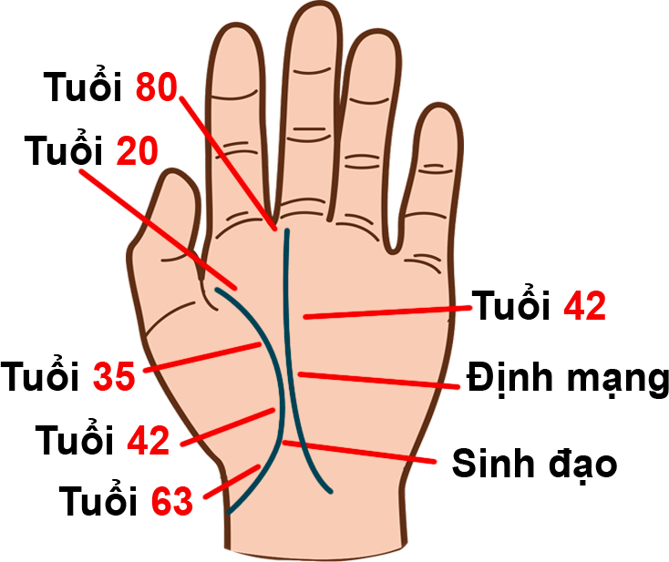
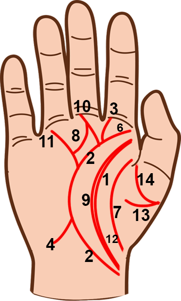

Đường sinh đạo là thướt đo sinh khí và sinh lực. Nó luôn hiện diện trong lòng bàn tay, thể
hiện tuổi thọ, sức sống, quan hệ gia đình và nhưng vấn đề chung trong cuộc đời con người.
Bắt đầu xem đường sinh đạo từ phía trên ngón cái và sau đó đi xuống phía dưới về hướng cổ
tay, nơi đường chỉ kết thúc. Bạn có thể chú ý thấy một hoặc hai đường chỉ nhỏ cắt ngang
đường sinh đạo. Những đường chỉ này báo hiệu những cản trở nho nhỏ tại mỗi giai đoạn cụ thể.
1. Đường sinh đạo cong ra giữa bàn tay Điều này cho thấy một người có quan hệ mật thiết với
gia đình và hài lòng với cuộc sống gia đình. Họ thích giành thời gian ở nhà, và không có
muốn hay động lực để đi xa. 2. Đường sinh đạo cong ra giữa bàn tay Điều này cho thấy một
người luôn mong muốn đạt được những điều kỳ vỹ và khám phá những vùng đất mới. Họ thích mạo
hiểm và muốn đi du lịch. 3. Đường sinh đạo kết thúc ở phía cuối ngón tay cái sát cổ tay Khi
đường sinh đạo uốn quanh ngón tay cái và kết thúc ở phía gần cuối ngón tay cái sát cổ tay,
điều này cho thấy một người luôn hướng về quê hương và mong muốn sống nốt cuộc đời còn lại
trên mảnh đất quê nhà. 4. Đường sinh đạo kết thúc ở phía cuối bên kia của cổ tay, đối diện
với ngón tay cái Khi phần cuối của đường sinh đạo tách rời xa ngón tay cái và hướng về phía
đối diện của lòng bàn tay, điều này sẽ cho thấy người này sẽ di cư hoặc rời xa gia đình. 5.
Đường sinh đạo xuất hiện trên gò mộc tinh Nếu đường sinh đạo xuất phát ở phía dưới ngón tay
trỏ, điều này cho thấy một người luôn tìm cách thay đổi để sống tốt hơn. Họ có ý chí mạnh mẽ
và rất nhiều tham vọng. 6. Đường sinh đạo xuất phát từ lòng bàn tay gần gò Mộc Tinh Những
người này nhiều tham vọng và sẽ chỉ chú tâm để đạt được thành công. Họ có nghị lực đáng nể
của một nhà lãnh đạo giỏi. 7. Đường sinh đạo cắt ngang ngón tay cái Người này sống một cuộc
sống bó hẹp, chịu các ảnh hưởng văn hóa hoặc tôn giáo mạnh mẽ, bị dính líu tới tòa án hoặc
sống mãi ở nơi họ sinh ra.

Đường sinh đạo chính có thể được bổ sung thêm các đường Hỏa Tinh, các đường lo âu và các
đường trung thành. 8. Những chổ đứt quãng trên đường sinh đạo Những chỗ đứt quảng cho thấy
điểm khởi đầu và chững lại trong cuộc sống con người do những thay dổi lớn như kết hôn, ly
hôn hoặc một người rất thân qua đời. 9. Đường sinh đạo đôi Điều này có thể có ba ý nghĩa:
người này có thể là một người sinh đôi; họ có thể được một thiên thần hộ vệ hoặc họ có thể
sống hai cuộc sống, ví dụ ban ngày làm mẹ còn ban đêm thì làm việc ở câu lạc bộ. 10. Đường
tinh tiến (nổ lực) Khi đường sinh đạo hướng lên trên về phía gò Thổ Tinh, người này làm việc
rất chăm chỉ và không bao giờ nói “không” với công việc. Tuy nhiên, điều này cũng không nhất
thiết có nghĩa là thành công. 11. Đường thành công Khi đường sinh đạo hướng lên trên về phía
gò Thái Dương, điều này cho thấy thành công và may mắn. Đó cũng có thể là dấu hiệu của sự
nổi tiếng. 12. Đường Hỏa Tinh Đường này chạy phía trong đường sinh đạo, cho thấy một người
được thiên thần hộ vệ hoặc linh hồn bảo vệ luôn dõi theo chăm sóc bạn. 13. Các đường lo âu
Các đường nằm ngang trên gan ngón tay cái cho thấy áp lực và lo lắng. Đường này càng sâu thì
điều phiền muộn càng nặng nề. Nhiều đường mờ nhạt cho thấy một người có xu hướng cả lo. 14.
Các đường trung thành Các đường chạy dọc tạo vết nhăn trên gan ngón tay cái cho thấy sự
chung thủy với gia đình và chung thủy với bạn bè.